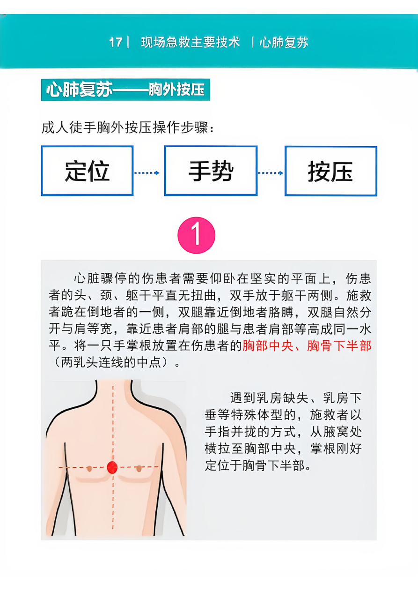
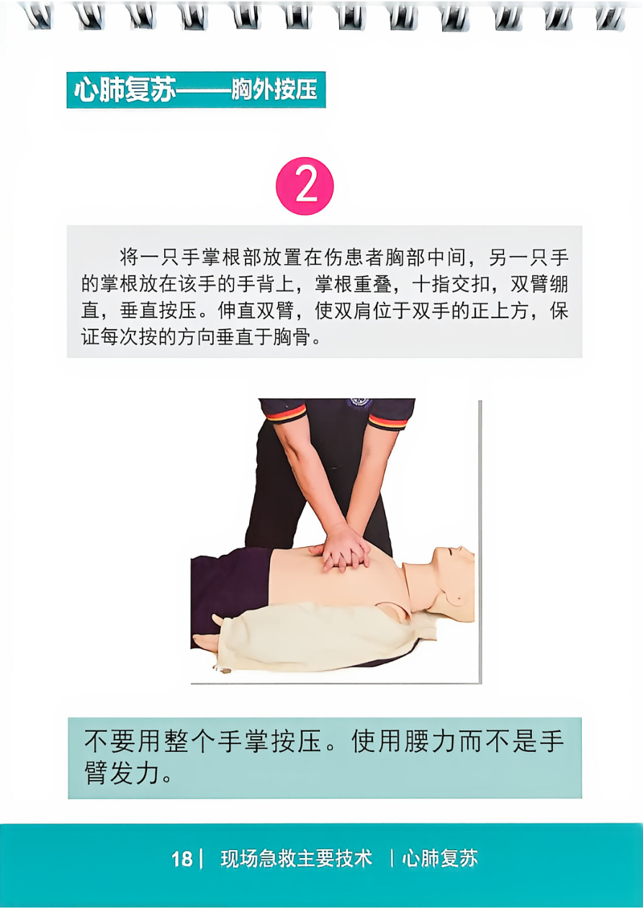
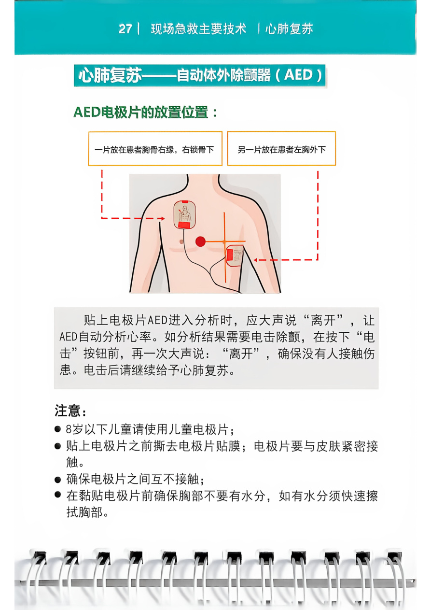

原手册第 15–28 页
心肺复苏 CPR
无反应、无正常呼吸，立即呼救并开始心肺复苏
按压频率100–120次/分钟
按压深度5–6厘米
按压与通气30 : 2成人
判断反应与呼吸
轻拍双肩并大声呼唤；同时观察胸腹部是否有正常起伏，判断时间为 5–10 秒。仅有濒死喘息不算正常呼吸。
呼叫 120 并取 AED
请旁人拨打 120 并寻找 AED；若独自一人，按 120 调度员指引行动。
持续胸外按压
让伤患仰卧于坚实平面。掌根置于胸部中央、胸骨下半部，双手重叠、双臂伸直，垂直按压。每次让胸廓充分回弹，尽量减少中断。
人工呼吸（受过训练且愿意时）
清除口中明显异物，仰头提颏开放气道。捏鼻、包住伤患口部，每次吹气约 1 秒，观察胸部隆起。若不能或不愿吹气，应持续胸外按压。
按 AED 语音提示操作
开机，擦干胸部并按图示贴电极片。分析和电击时确保无人接触伤患；电击后立即继续心肺复苏。不要关机或取下电极片。
高质量按压：快速、有力、充分回弹、少中断、避免过度通气。约每 2 分钟轮换按压者。
动作示例 图示来自原手册扫描页。点击图片可查看完整大图；请在培训模型上练习，真实施救时听从 120 调度员指导。

按压点在胸骨下半部，不要压在肋骨或剑突上。
查看原手册第 17 页
肩部位于双手正上方，每次按压后让胸廓充分回弹。
查看原手册第 18 页
一片贴右锁骨下方，另一片贴左胸外下方；分析与电击时不要接触伤患。
查看原手册第 27 页AED 电极片位置与注意事项
一片贴在胸骨右缘、右锁骨下；另一片贴在左胸外下方。电极片应紧贴皮肤且互不接触。8 岁以下儿童优先使用儿童电极片；若没有，请遵循设备和 120 调度员提示。